Objetivo
Este reporte documenta el proyecto PR03, «Operación narcos: expediente Kowhai». El caso parte de una alerta internacional que llevó a las autoridades de Nueva Zelanda a interceptar en el aeropuerto de Wellington a dos pasajeros procedentes de Australia, con un kilogramo de metanfetamina en una maleta. La investigación posterior llevó a un inmueble en Petone, donde se aseguraron sustancias, armas y una computadora de escritorio relacionada con Steve Kowhai. De ese equipo se dispone de una imagen forense identificada como Narcos-1.
El objetivo es examinar la imagen para identificar información relevante, reconstruir acontecimientos y determinar qué actividades pueden demostrarse a partir del disco. La Parte I extrae e identifica la evidencia (sistema operativo, perfil, navegadores, archivos, programas y artefactos), con el valor exacto, la ruta dentro de la imagen, la herramienta usada y una captura. La Parte II interpreta lo encontrado: distingue lo observado, la interpretación propuesta y lo que no puede confirmarse, y evita tratar una descarga como si fuera una ejecución.
La evidencia pertenece al escenario «2019 Narcos» de Digital Corpora, un conjunto de datos forense estandarizado que se usa en formación y evaluación de competencias (Garfinkel et al., 2009; Digital Corpora, s. f.). Todos los nombres, lugares y hechos del caso son ficticios y corresponden a ese ejercicio. El análisis se hizo con Autopsy 4.23.1, y para la verificación de integridad se usó además el registro que generó FTK Imager al adquirir la imagen.
Desarrollo
Preparación de la evidencia
Se creó la carpeta de trabajo PR03 con tres subcarpetas: Zips, para los archivos originales descargados; Evidencia, para la imagen ya descomprimida; y Caso, donde Autopsy guardaría su base de datos (figuras 1 y 2). La carpeta Caso estaba vacía en ese momento, porque el caso aún no se había creado.
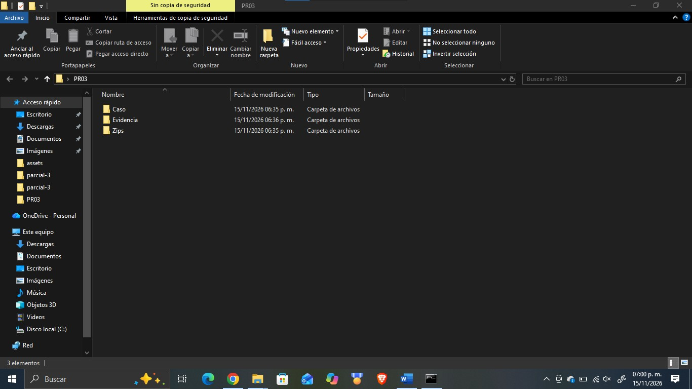
Narcos1.zip se descargó en 15 volúmenes (Narcos1.zip.001 a Narcos1.zip.015; el Explorador oculta la terminación numérica de algunos) y quedó intacto en la carpeta Zips, de modo que se conserva el archivo original, como pide la actividad. La extracción se hizo en Evidencia, que contiene la carpeta Narcos1 (figura 2).
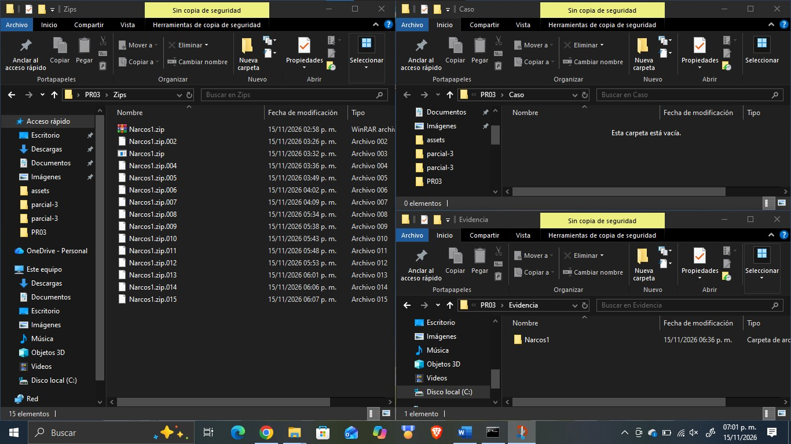
Dentro de Narcos1 hay dos carpetas: Image, con el disco, y Memory Dump, con el volcado de memoria (figura 3). En Image están los 21 segmentos de la imagen (Narcos-1.001 a Narcos-1.021) y un archivo Narcos-1.001.txt con el registro de la adquisición; en Memory Dump están los tres segmentos del volcado de RAM (figura 4). Esta práctica se limita al análisis del disco, y el volcado se menciona más adelante como evidencia adicional.
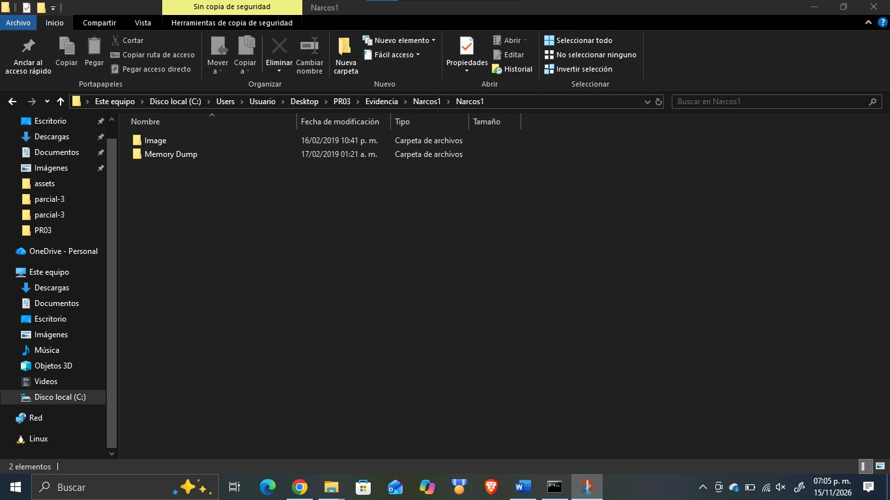
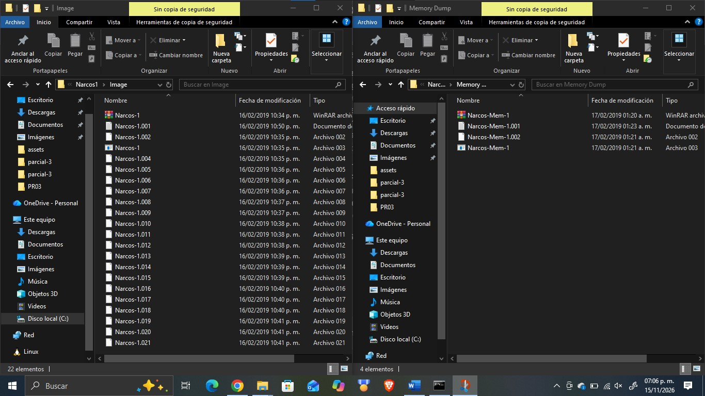
Creación del caso y carga de la imagen en Autopsy
Se abrió Autopsy 4.23.1 y se creó un caso nuevo (figura 5). En la primera ventana se escribió el nombre del caso, PR03_Kowhai, y como directorio base la carpeta Caso, de modo que los datos se guardan en PR03\Caso\PR03_Kowhai (figura 6). El tipo de caso es Single-User.
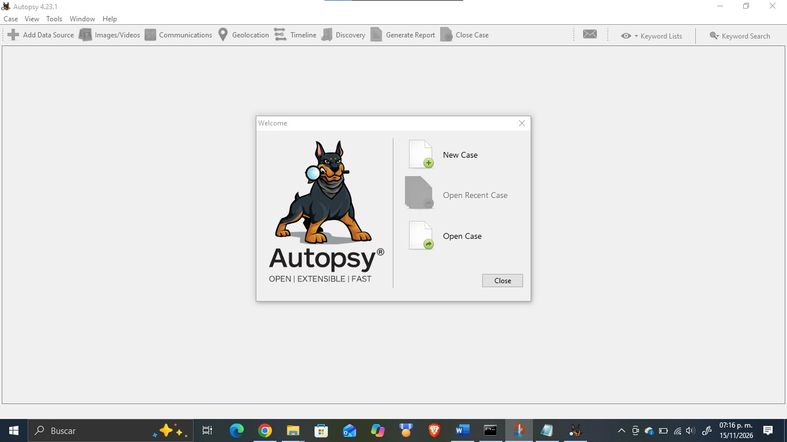
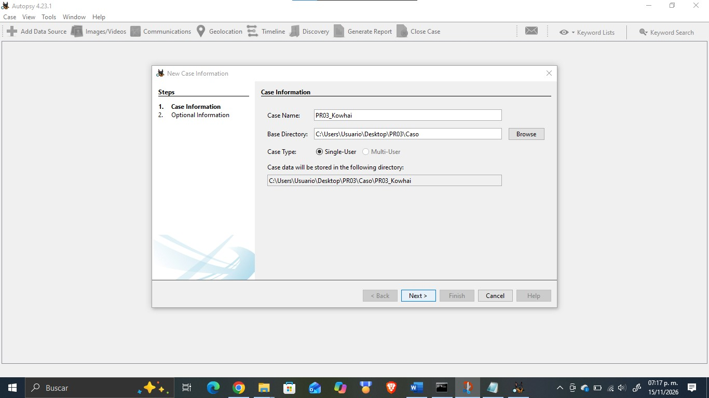
En la segunda ventana se registró el número de caso (03), el nombre del examinador, su correo institucional, las notas («Operación Narcos: Expediente Kowhai (Evidencia Narcos-1)») y la organización, Universidad Politécnica de San Luis Potosí (figura 7). Estos datos quedan asociados al caso y a los reportes que genere Autopsy, lo que ayuda a documentar quién examinó la evidencia.
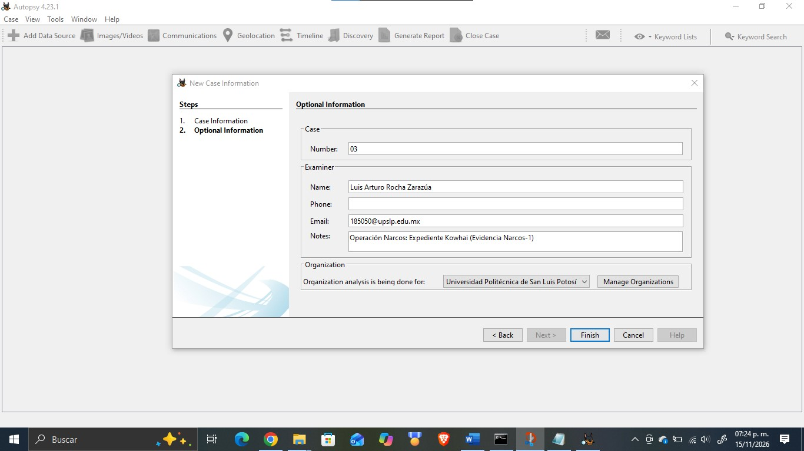
Después se agregó la fuente de datos. Se dejó la opción de generar el nombre del host a partir de la fuente (figura 8), se eligió el tipo Disk Image or VM File (figura 9) y se indicó la ruta del primer segmento, Evidencia\Narcos1\Narcos1\Image\Narcos-1.001; Autopsy toma automáticamente los demás segmentos (figura 10).
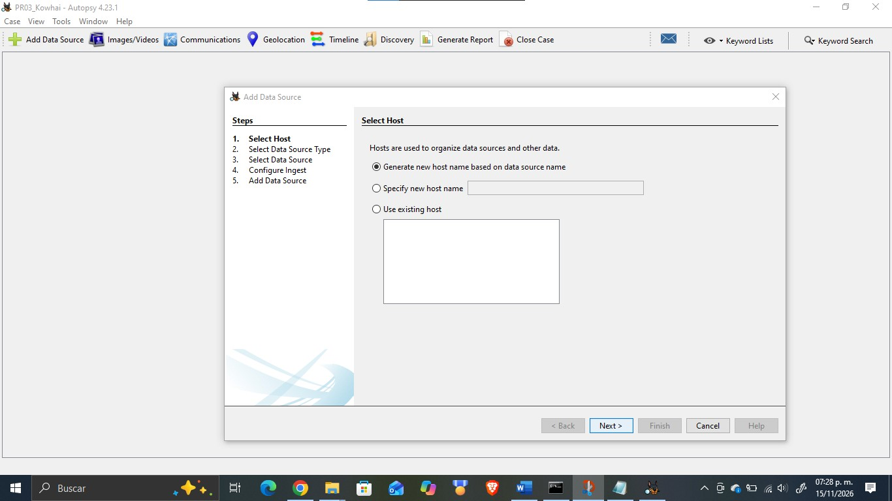
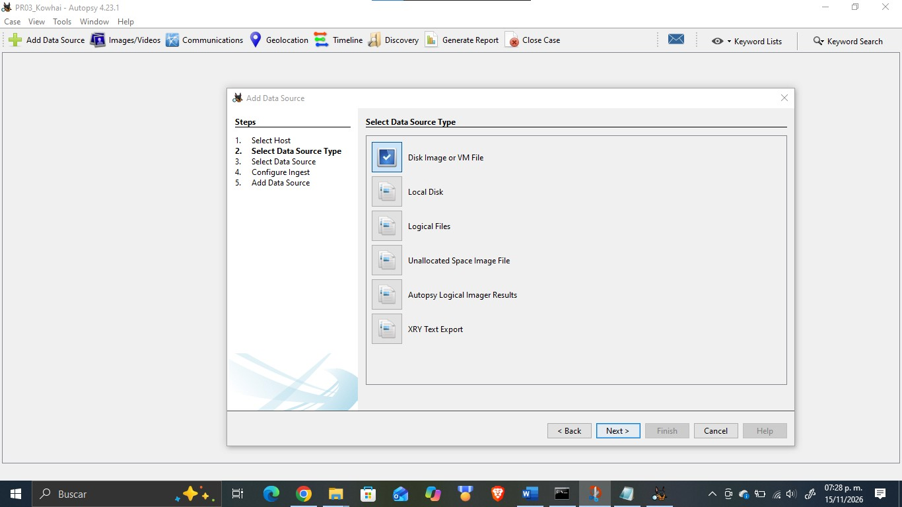
Un ajuste importante es la zona horaria de la fuente: se eligió (GMT+12:00) Pacific/Auckland, que es la de Nueva Zelanda y corresponde a NZDT (UTC+13) en enero y febrero por el horario de verano. Con ella Autopsy interpreta correctamente las fechas del disco y permite responder en NZDT, como pide la actividad. Los campos de hashes opcionales se dejaron vacíos; Autopsy advierte que esos valores no se validan al agregar la fuente, por lo que la verificación se hizo con un módulo de ingesta (sección 2.3).
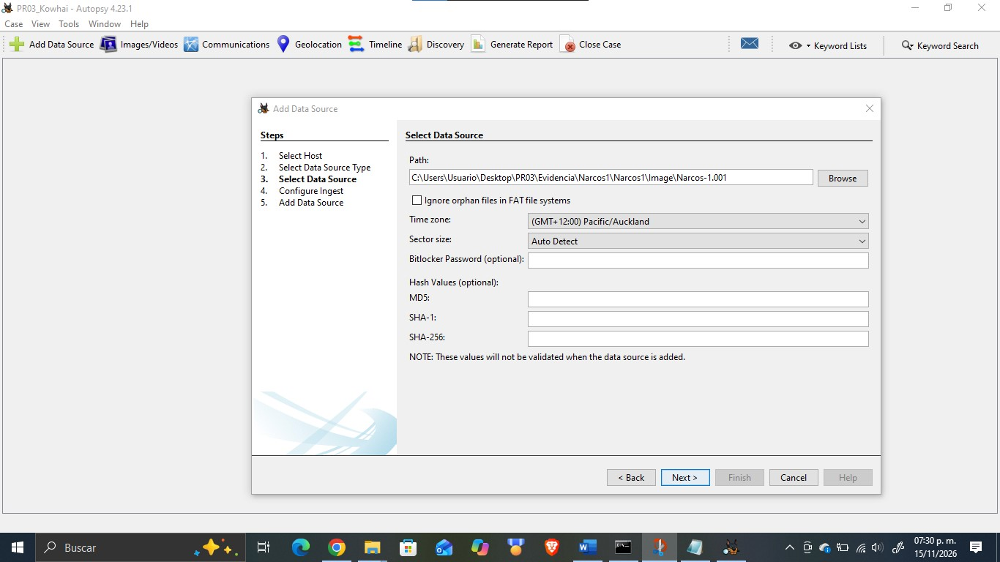
En la configuración de la ingesta se activaron los módulos Recent Activity, Hash Lookup, File Type Identification, Extension Mismatch Detector, Embedded File Extractor, Picture Analyzer, Keyword Search y Data Source Integrity (figura 11). Recent Activity es el que extrae los artefactos del sistema (programas ejecutados, historial web, cuentas) y Data Source Integrity calcula y verifica los hashes de la imagen. Quedaron sin activar Email Parser, Encryption Detection, Interesting Files Identifier, Central Repository, PhotoRec Carver y Virtual Machine Extractor. En particular, Encryption Detection no se usó, algo que conviene tener presente al hablar de cifrado en la Parte II.
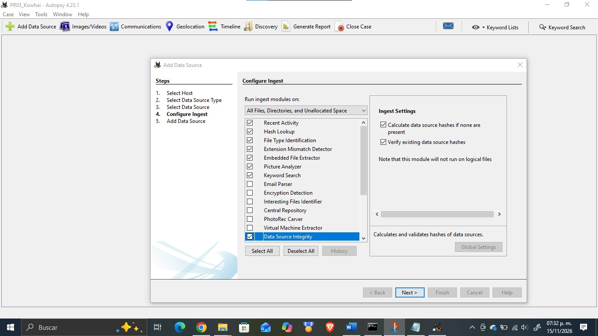
Al terminar, Autopsy informó «Data Source added (non-critical errors encountered)», es decir, la fuente se agregó con errores no críticos (figura 12). Esos errores no impidieron el análisis, aunque su registro no se revisó en detalle. La ingesta siguió trabajando mientras se capturaban las pantallas.
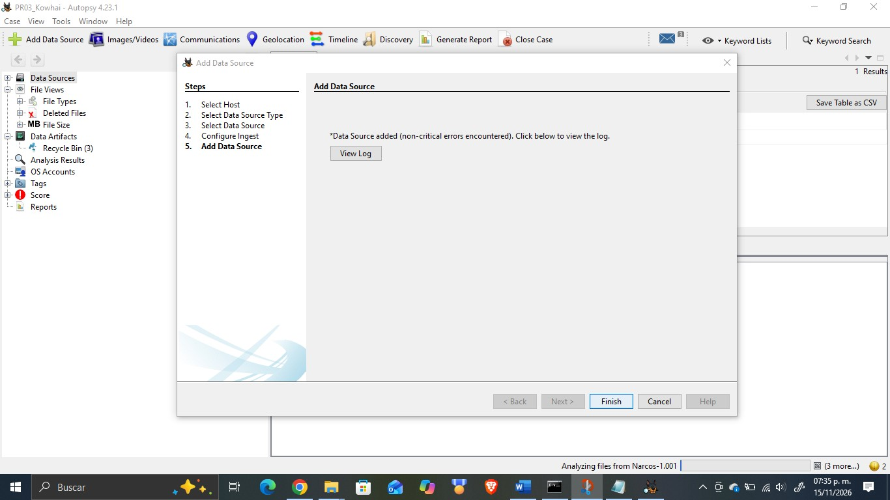
Verificación de integridad de la imagen
Antes de analizar, se comprobó que la evidencia no estuviera alterada. La actividad pide verificar la integridad, y para eso hay tres fuentes. La primera son los volúmenes originales del ZIP: con Get-FileHash se calculó el SHA-256 de cada uno, sin tocarlos, desde la carpeta PR03 (figura 13). El cálculo se hizo el 16/11/2026 a las 08:16 p. m. (hora del equipo del examinador, UTC-06:00), ya con la imagen extraída; los volúmenes siguen sin modificar en la carpeta Zips.
cd C:\Users\Usuario\Desktop\PR03
Get-FileHash .\Zips\Narcos1.zip* -Algorithm SHA256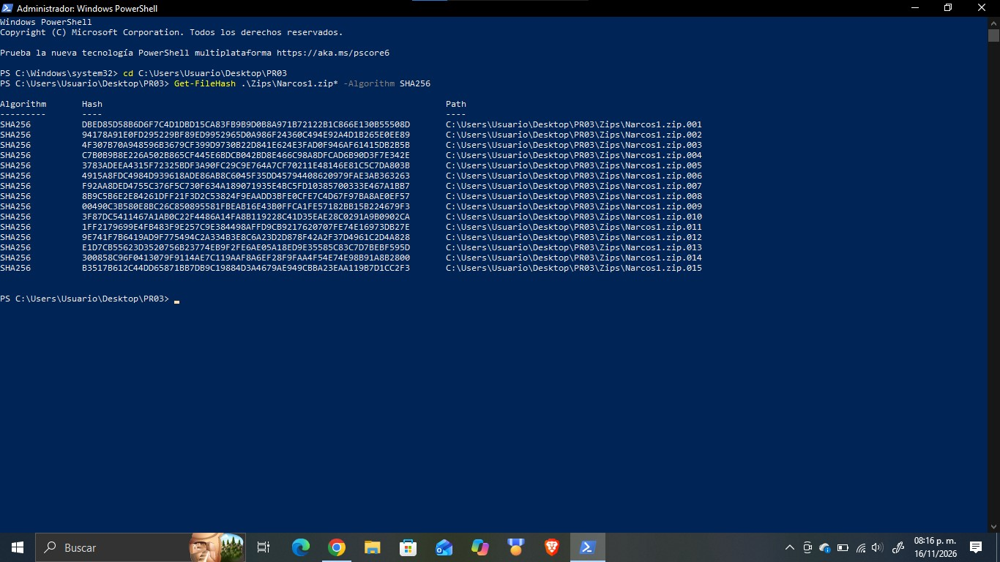
Volumen | SHA-256 |
|---|---|
| Narcos1.zip.001 | DBED85D58B6D6F7C4D1DBD15CA83FB9B9D0B8A971B72122B1C866E130B55508D |
| Narcos1.zip.002 | 94178A91E0FD295229BF89ED9952965D0A986F24360C494E92A4D1B265E0EE89 |
| Narcos1.zip.003 | 4F307B70A948596B3679CF399D9730B22D841E624E3FAD0F946AF61415DB2B5B |
| Narcos1.zip.004 | C7B0B9B8E226A502B865CF445E6BDCB042BD8E466C98A8DFCAD6B90D3F7E342E |
| Narcos1.zip.005 | 3783ADEEA4315F72325BDF3A90FC29C9E764A7CF70211E48146E81C5C7DA803B |
| Narcos1.zip.006 | 4915A8FDC4984D939618ADE86AB8C6045F35DD45794408620979FAE3AB363263 |
| Narcos1.zip.007 | F92AA8DED4755C376F5C730F634A189071935E4BC5FD10385700333E467A1BB7 |
| Narcos1.zip.008 | 8B9C5B6E2E84261DFF21F3D2C53824F9EAADD3BFE0CFE7C4D67F97BA8AE0EF57 |
| Narcos1.zip.009 | 00490C3B580E8BC26C850895581FBEAB16E43B0FFCA1FE57182BB15B224679F3 |
| Narcos1.zip.010 | 3F87DC5411467A1AB0C22F4486A14FA8B119228C41D35EAE28C0291A9B0902CA |
| Narcos1.zip.011 | 1FF2179699E4FB483F9E257C9E384498AFFD9CB9217620707FE74E16973DB27E |
| Narcos1.zip.012 | 9E741F7B6419AD9F775494C2A334B3E8C6A23D2D878F42A2F37D4961C2D4A828 |
| Narcos1.zip.013 | E1D7CB55623D3520756B23774EB9F2FE6AE05A18ED9E35585C83C7D7BEBF595D |
| Narcos1.zip.014 | 300858C96F0413079F9114AE7C119AAF8A6EF28F9FAA4F54E74E98B91A8B2800 |
| Narcos1.zip.015 | B3517B612C44DD65871BB7DB9C19884D3A4679AE949CBBA23EAA119B7D1CC2F3 |
Estos valores se registran como referencia para verificar posteriormente que los volúmenes originales no hayan sido modificados. Como no se localizó un valor publicado por la fuente con el cual compararlos, no permiten por sí solos confirmar que la descarga sea idéntica al original. La integridad de la evidencia se sustenta en la segunda fuente: el archivo Narcos-1.001.txt, generado por FTK Imager 4.2.0.13 durante la adquisición del disco (figuras 14 y 15). Dicho registro indica que la fuente fue un disco físico VMware de 62,914,560 sectores de 512 bytes (30,720 MB), adquirido el 17/02/2019 entre las 17:34:16 y las 17:41:53, y verificado posteriormente entre las 17:41:55 y las 17:50:02, con coincidencia de los hashes MD5 y SHA1 («verified»). El registro no especifica la zona horaria. Las horas se interpretan como NZDT, ya que las fechas de los archivos de la imagen mostradas por el Explorador de Windows (22:34 del 16/02/2019 en CST) equivalen a las 17:34 del 17/02/2019 en NZDT.
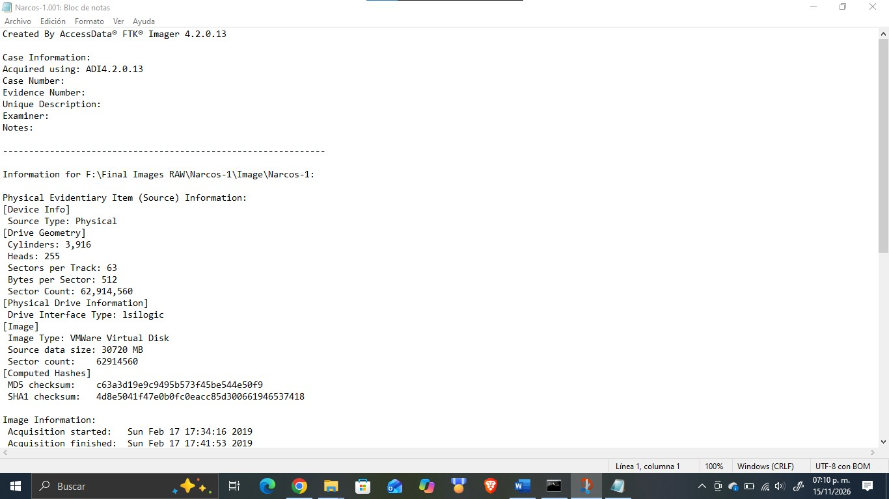
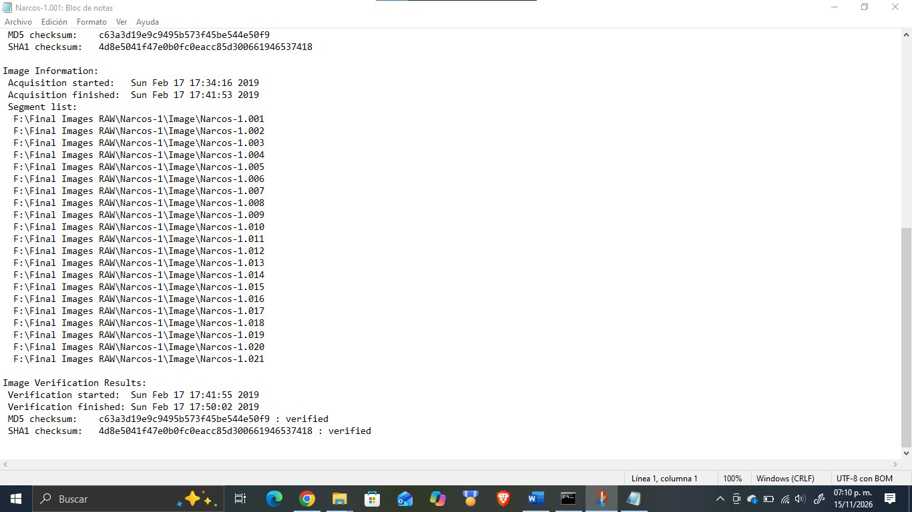
La tercera fuente es el propio Autopsy. En la pestaña Container del resumen de la fuente de datos aparecen el tipo de imagen (Raw Single), el tamaño (32.21 GB, 32,212,254,720 bytes), la zona horaria y los hashes MD5, SHA1 y SHA-256, que el módulo Data Source Integrity calculó (figura 16). La tabla 2 compara los dos conjuntos de valores.
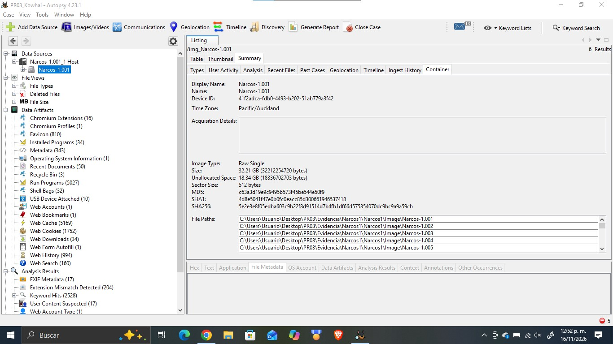
Algoritmo | FTK Imager (registro) | Autopsy (Container) | Resultado |
|---|---|---|---|
| MD5 | c63a3d19e9c9495b573f45be544e50f9 | c63a3d19e9c9495b573f45be544e50f9 | Coincide |
| SHA1 | 4d8e5041f47e0b0fc0eacc85d300661946537418 | 4d8e5041f47e0b0fc0eacc85d300661946537418 | Coincide |
| SHA-256 | No calculado por FTK Imager | 5e2e3e8f05edba603c9b22f8d91514d7b4fb1df66d575354070dc9bc9a9a59cb | Referencia |
Resultado. El MD5 y el SHA1 que calculó FTK Imager en 2019 son idénticos a los que calculó Autopsy sobre la imagen que se analizó. Eso indica que la imagen no cambió desde su adquisición ni durante la descarga y la extracción. El SHA-256 de Autopsy queda como valor de referencia para futuras verificaciones. Como la imagen que salió de la extracción conserva exactamente esos hashes, la descarga y la descompresión no la alteraron. Los SHA-256 de los volúmenes del ZIP quedan solo como referencia propia, porque no hay un valor oficial con el cual compararlos.
Importancia. Un hash es una huella digital del contenido: si cambia un solo bit, el valor cambia por completo. Comparar el hash de la adquisición con el del análisis es lo que permite sostener ante un tribunal que la evidencia analizada es la misma que se adquirió. Además, Autopsy trabaja sobre la imagen en modo de solo lectura, por lo que el análisis no la modifica.
Nota sobre las fechas. Autopsy muestra las fechas en la zona horaria de la computadora del examinador (CST, UTC-06:00) hasta que se cambia esa opción. Las capturas de las figuras 18 a 26 (Windows, perfil, UserAssist y navegadores) muestran CST; a partir de la figura 27 ya aparece NZDT. En el texto, las horas de las primeras se convierten a NZDT sumando 19 horas, y los valores del Registro, que Autopsy da en UTC, se convierten sumando 13 horas.
Parte I. Edición y versión de Windows
La edición y la versión de Windows se obtuvieron de dos maneras. Primero, con el artefacto Operating System Information de Autopsy, que Recent Activity genera a partir del Registro (figura 17). La tabla muestra el nombre del equipo (SK-DESKTOP), el programa (Windows 10 Pro), la arquitectura (AMD64), la ruta del sistema (C:\Windows), el Product ID (00330-80000-00000-AA502) y el propietario (Steve).
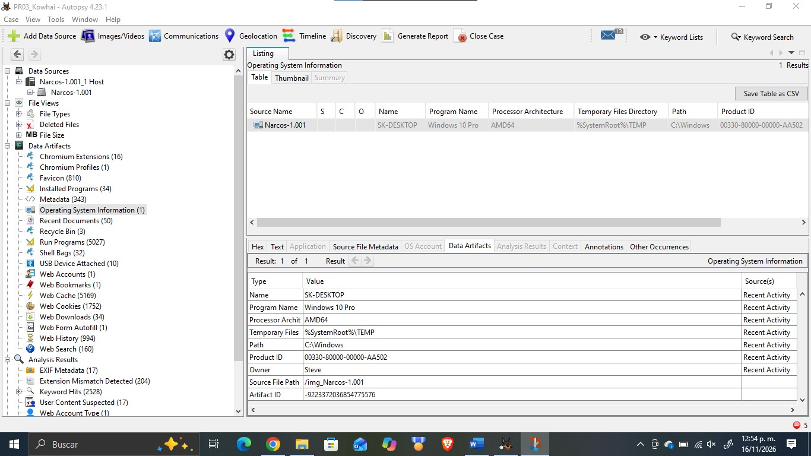
Después se confirmó directamente en el Registro. En el hive SOFTWARE, que está en /img_Narcos-1.001/vol_vol7/Windows/System32/config/SOFTWARE, se abrió la clave Microsoft\Windows NT\CurrentVersion con el visor de registro de Autopsy (figuras 18 y 19).
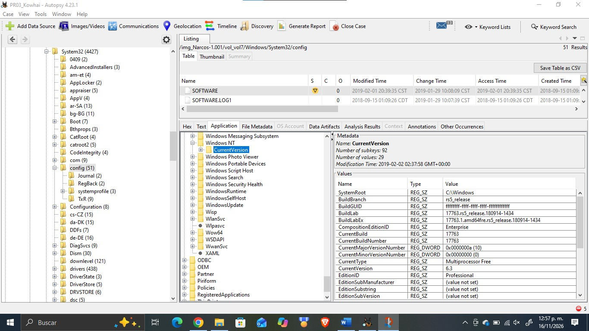
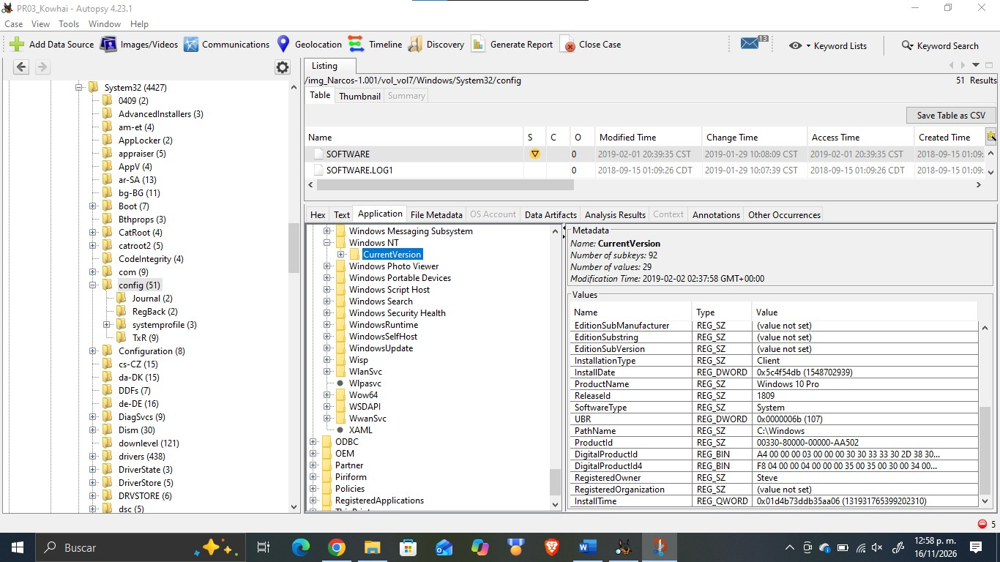
Resultado. ProductName es «Windows 10 Pro», EditionID es «Professional» y ReleaseId es «1809». CurrentBuild y CurrentBuildNumber son 17763, y UBR (la revisión) es 0x6b (107), de modo que la compilación completa es 17763.107; BuildLab es 17763.rs5_release.180914-1434. Además, RegisteredOwner es «Steve» y InstallDate es 0x5c4f54db (1548702939 en segundos Unix), que corresponde al 28/01/2019 19:15:39 UTC, es decir, el 29/01/2019 a las 08:15:39 NZDT. InstallTime, en formato FILETIME, da la misma fecha. CompositionEditionID aparece como «Enterprise»; se tomó como edición instalada la que indican ProductName y EditionID, que es Pro.
Parte I. Perfil principal
Para identificar el perfil principal se revisó primero el artefacto OS Accounts (figura 20). Además de las cuentas del sistema (SYSTEM, LOCAL SERVICE y NETWORK SERVICE) y de varias cuentas de servicio, hay una cuenta de usuario con nombre: «steve», cuyo SID es S-1-5-21-1474204758-2504895174-1356074821-1001. También aparecen dos SID más de tipo usuario sin nombre de inicio de sesión: uno con el mismo prefijo y terminado en -1000, y otro de otro dominio. Autopsy rotula el ámbito como Domain, pero no se encontró evidencia de un dominio y el equipo parece ser local; esa etiqueta se debe a cómo Autopsy clasifica los SID S-1-5-21.
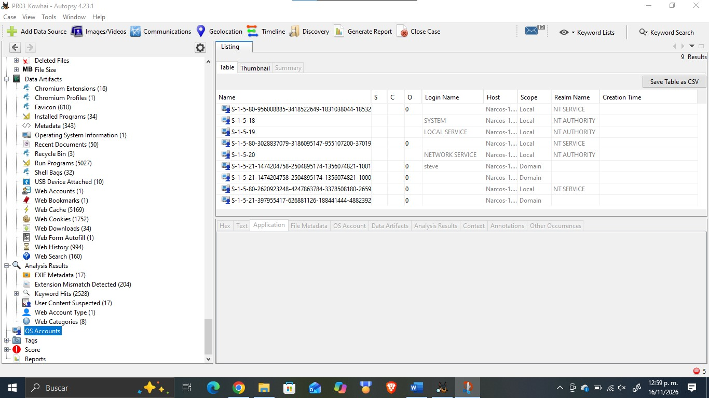
La carpeta del perfil se comprobó en el árbol de archivos. En /img_Narcos-1.001/vol_vol7/Users hay las carpetas All Users, Default, Default User, Public y Steve, además de desktop.ini (figura 21). Steve es la única carpeta de un usuario real; se creó el 28/01/2019 a las 13:35:07 CST, es decir, el 29/01/2019 a las 08:35:07 NZDT, unos 20 minutos después de la instalación del sistema.
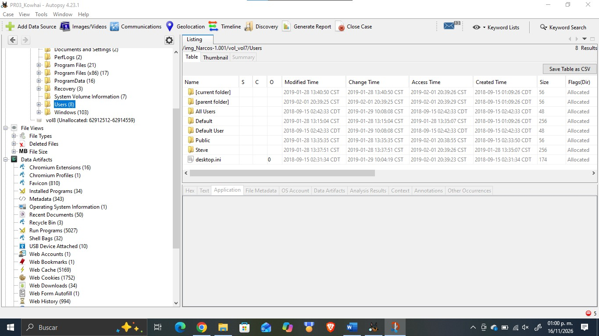
Límite. Que exista una sola carpeta de perfil no demuestra que una sola persona usara el equipo. Los SID sin nombre sugieren que pudo haber otras cuentas, aunque no hay carpeta de perfil asociada en la captura. Esto se retoma en la explicación alternativa.
Parte I. Clave UserAssist
UserAssist es una clave del Registro de cada usuario que guarda información sobre los programas que se ejecutan desde el Explorador de Windows. Se encuentra en el archivo NTUSER.DAT del perfil, que en esta imagen está en /img_Narcos-1.001/vol_vol7/Users/Steve/NTUSER.DAT. Se abrió con el visor de registro de Autopsy (figuras 22 y 23).
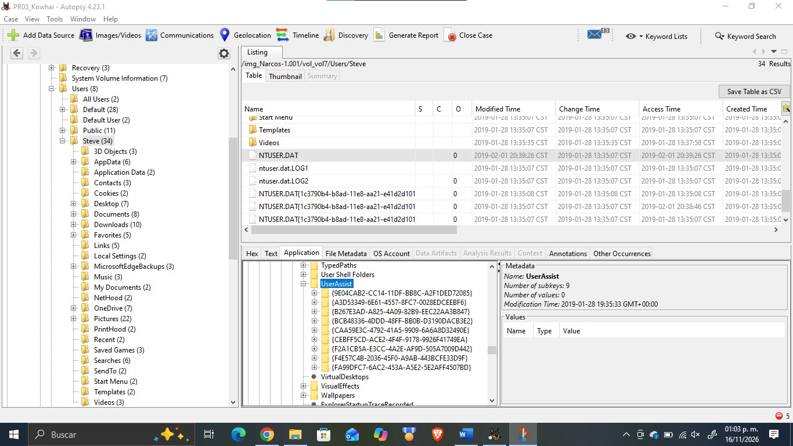
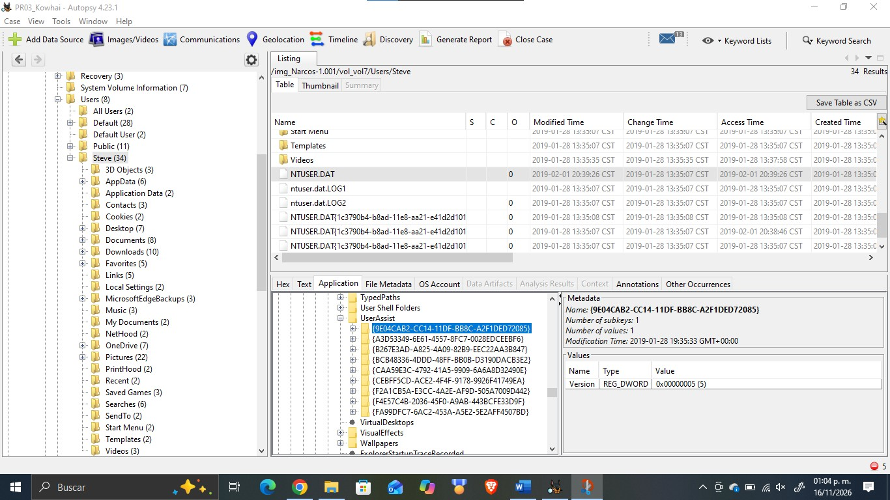
Resultado. La clave UserAssist tiene 9 subclaves, una por cada GUID, y 0 valores propios. Su fecha de última modificación es el 28/01/2019 19:35:33 UTC (29/01/2019 08:35:33 NZDT), cerca de la creación del perfil. La subclave {9E04CAB2-CC14-11DF-BB8C-A2F1DED72085} tiene un valor Version de tipo REG_DWORD igual a 5. En la lista de GUID están los que habitualmente contienen el conteo de ejecuciones, {CEBFF5CD-ACE2-4F4F-9178-9926F41749EA} (programas) y {F4E57C4B-2036-45F0-A9AB-443BCFE33D9F} (accesos directos), cuyos nombres se guardan codificados en ROT13. En esta práctica no se decodificaron a mano; la actividad de programas se estudió con el artefacto Run Programs de Autopsy.
Parte I. Navegadores y hash del historial de Chrome
El artefacto Web History de Autopsy reúne 994 resultados de dos fuentes. La primera es la base de datos de Chrome, cuyo origen es el archivo History (figura 24). La segunda es WebCacheV01.dat, la base de datos que usan Internet Explorer y Microsoft Edge en su versión heredada (figura 25). En ambos casos se abrió la pestaña Source File Metadata para ver el archivo de origen.
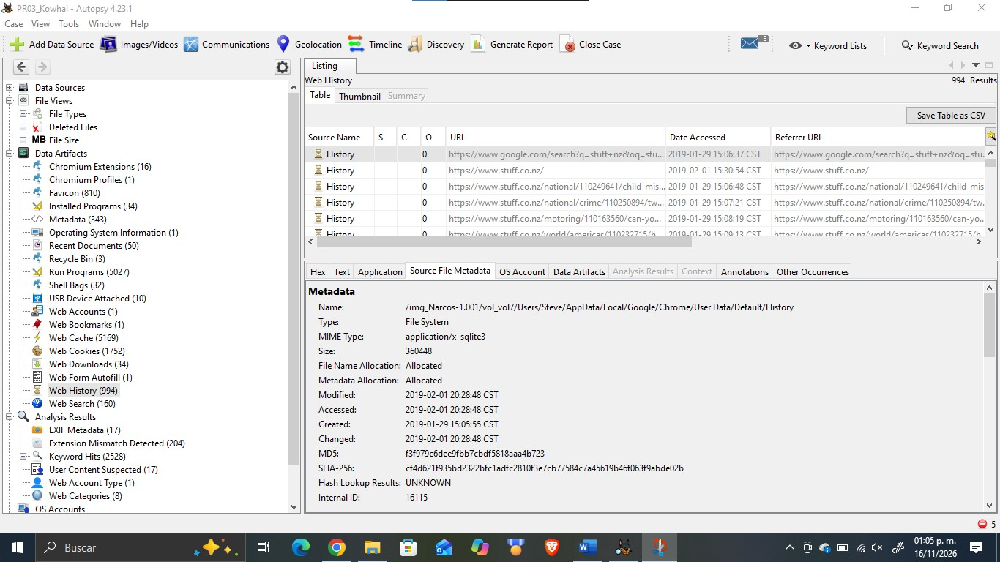
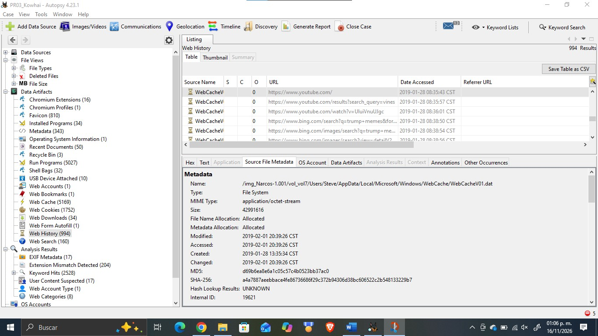
El hash del archivo History se obtuvo de su metadatos de archivo en la carpeta Default del perfil de Chrome (figura 26). Autopsy calcula MD5 y SHA-256 de todos los archivos cuando está activo el módulo de hash; el valor aparece en la pestaña File Metadata.
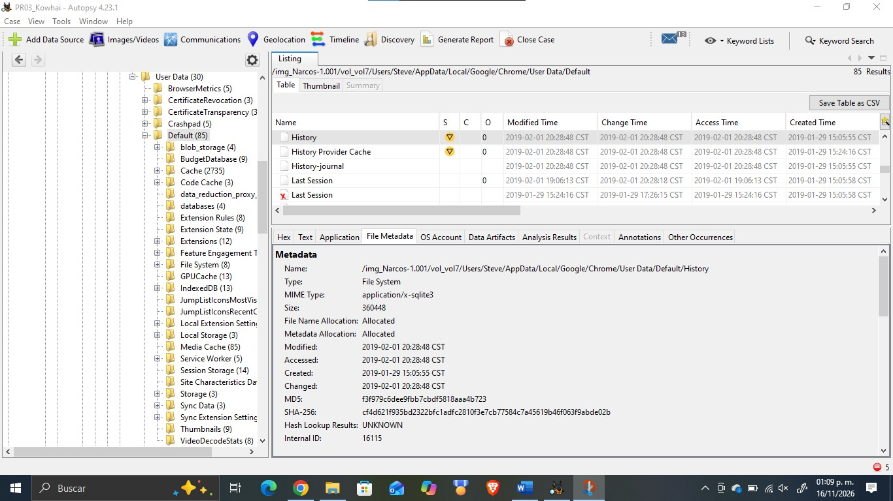
Resultado. History es una base de datos SQLite de 360,448 bytes. Se creó el 29/01/2019 a las 15:05:55 CST (30/01/2019 10:05:55 NZDT) y se modificó por última vez el 01/02/2019 a las 20:28:48 CST (02/02/2019 15:28:48 NZDT). Sus primeras entradas son una búsqueda de Google, «stuff nz», y páginas del sitio de noticias stuff.co.nz. El MD5 es f3f979c6dee9fbb7cbdf5818aaa4b723 y el SHA-256 es cf4d621f935bd2322bfc1adfc2810f3e7cb77584c7a45619b46f063f9abde02b. WebCacheV01.dat pesa 42,991,616 bytes y su MD5 es d69b6ea8e6a1c05c57c4b0523bb37ac0.
Límite. Las entradas más antiguas de WebCacheV01.dat que se alcanzan a ver, del 28/01/2019 08:35 CST (YouTube y Bing), son anteriores a la creación del perfil (28/01/2019 13:35 CST). Esa diferencia de cinco horas sugiere un problema de interpretación de la zona horaria en esa base, por lo que sus fechas se toman con cautela.
Parte I. airport crystals.jpg
Se buscó el nombre del archivo con la función de búsqueda de nombres de archivo de Autopsy, y se abrió su pestaña File Metadata (figura 27). La búsqueda devolvió cuatro resultados: el archivo, su espacio sobrante (slack), su flujo alternativo Zone.Identifier y un elemento .lnk con fechas en cero. Después se revisó el contenido en la pestaña Application (figura 28).
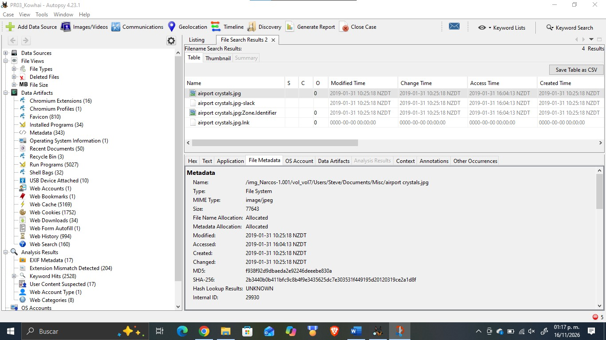
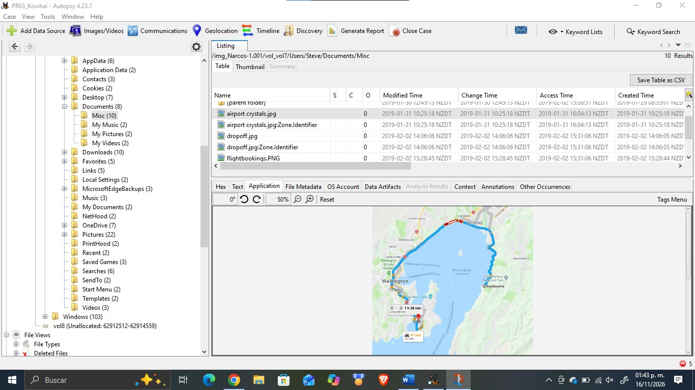
Resultado. El archivo mide 77,643 bytes y su MD5 es f938f92d9dbaeda2e92246deeebe830a. Su fecha de creación, modificación y cambio es el 31/01/2019 a las 10:25:18 NZDT, y su último acceso, el 31/01/2019 a las 16:04:13 NZDT. Tiene un flujo Zone.Identifier, que Windows crea cuando un archivo viene de una zona externa, como Internet o un mensaje. La imagen es una captura de Google Maps con una ruta en auto que sale de Eastbourne, rodea la bahía de Wellington por la zona de Petone y llega a la punta sur de la ciudad, con un tiempo de 47 minutos y unos 31 km (el marcador está en la zona del aeropuerto).
Parte I. dropoff.jpg
Con el mismo procedimiento se localizó dropoff.jpg (figura 29) y se revisó su contenido (figura 30).
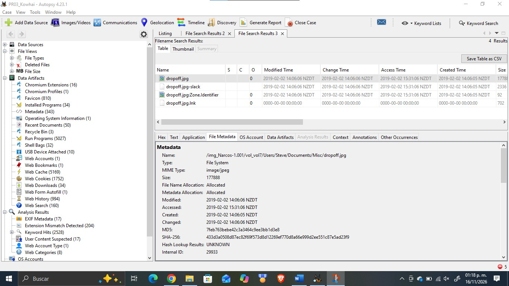
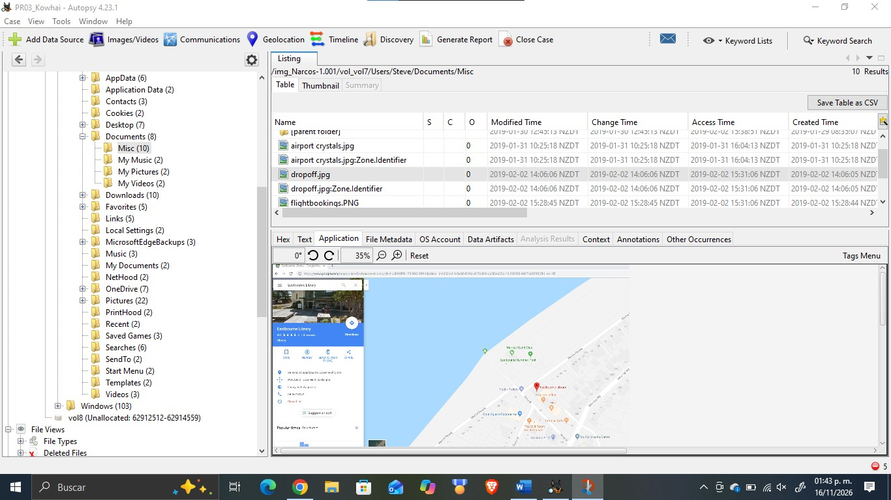
Resultado. El archivo está en /img_Narcos-1.001/vol_vol7/Users/Steve/Documents/Misc/dropoff.jpg y mide 177,888 bytes. Se creó el 02/02/2019 a las 14:06:05 NZDT y se modificó por última vez el 02/02/2019 a las 14:06:06 NZDT; su último acceso es del 02/02/2019 15:31:06 NZDT. Su MD5 es 7feb763bebe42c3a3464c9ee3bb1d3e8. También tiene Zone.Identifier. La imagen es una captura de una ventana del navegador con Google Maps, titulada «Eastbourne Library», que muestra la ficha de la biblioteca, el marcador en el mapa y, abajo, que estaba «Closed» al momento de la consulta.
Parte I. Imagen de reservaciones de vuelo
En la carpeta Documents\Misc se buscó la imagen de reservaciones de vuelo. Su contenido se vio en la pestaña Application (figura 31) y sus metadatos en File Metadata (figura 32).
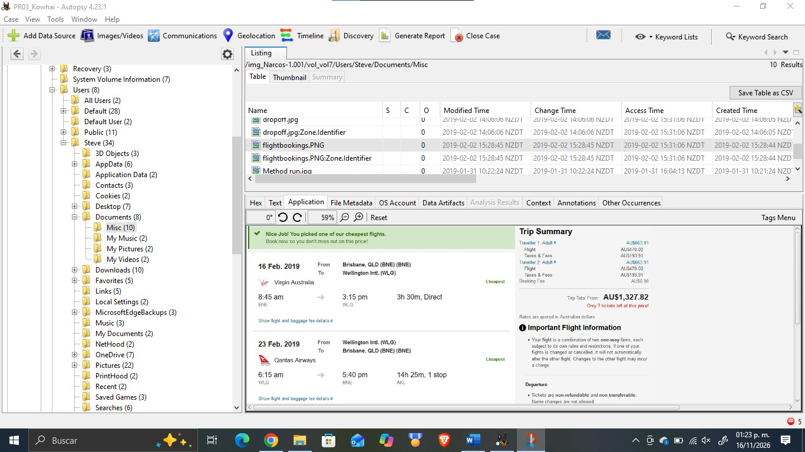
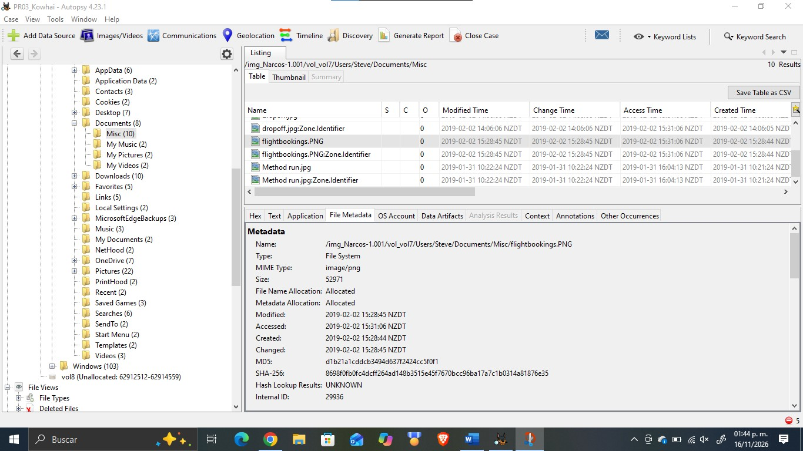
Resultado. El archivo se llama flightbookings.PNG (con extensión en mayúsculas), mide 52,971 bytes y su MD5 es d1b21a1cddcb3494d637f2424cc5f0f1. Se creó el 02/02/2019 a las 15:28:44 NZDT y se modificó a las 15:28:45 NZDT. La imagen es un «Trip Summary» con dos viajeros adultos: un vuelo de ida el 16/02/2019 de Brisbane (BNE) a Wellington (WLG) con Virgin Australia, de 8:45 a. m. a 3:15 p. m. (3 h 30 min, directo), y un regreso el 23/02/2019 de Wellington a Brisbane con Qantas, de 6:15 a. m. a 5:40 p. m. (14 h 25 min, con una escala en AKL). Cada viajero cuesta AU$663.91 (vuelo AU$470.00 e impuestos AU$193.91), con un total de AU$1,327.82, y se lee «Only 7 tickets left at this price!».
Parte I. Method run.jpg
Method run.jpg está en la misma carpeta Documents\Misc (figuras 33 y 34).
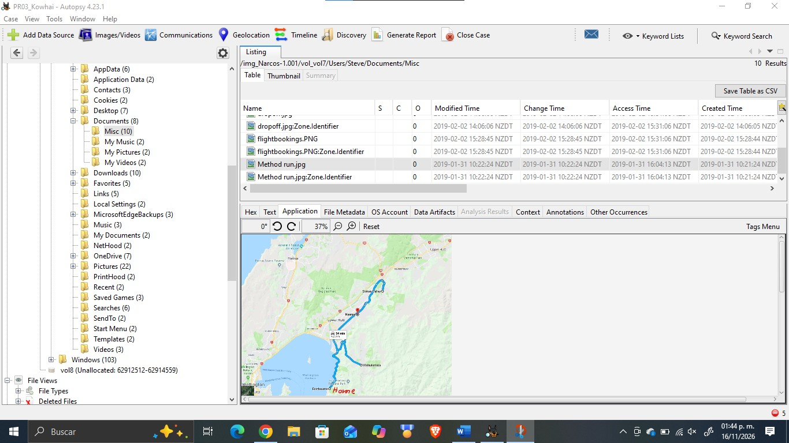
Resultado. El archivo mide 145,213 bytes y su MD5 es 69b225bc0ef5a0c003f1e2a6646aaf92. Se creó el 31/01/2019 a las 10:21:24 NZDT y se modificó un minuto después, a las 10:22:24 NZDT; el último acceso es del 31/01/2019 16:04:13 NZDT, igual que airport crystals.jpg. También tiene Zone.Identifier. La imagen es un mapa con una ruta en auto de 54 minutos que sale de Eastbourne, donde alguien escribió «Home» a mano en rojo, y sube por Lower Hutt hasta Stokes Valley, con otro ramal hacia Wainuiomata.
Parte I. BNE.png
BNE.png no está en Documents\Misc, sino en una carpeta Misc dentro de Downloads (figuras 35 y 36). En la segunda captura el árbol muestra seleccionada la carpeta Documents\Misc, pero la tabla corresponde al resultado de la búsqueda del archivo; su ruta real es la que indican los metadatos (Downloads\Misc).
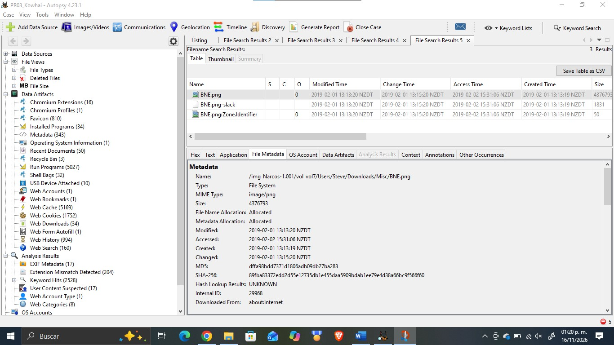
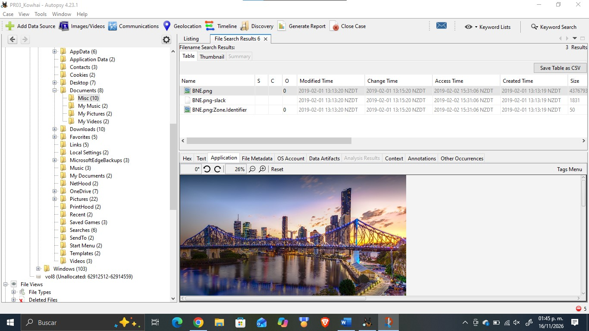
Resultado. El archivo mide 4,376,793 bytes (unos 4.2 MB). Se creó el 01/02/2019 a las 13:13:19 NZDT y se modificó a las 13:13:20 NZDT; su fecha de cambio de metadatos es 13:15:20 NZDT y su último acceso, el 02/02/2019 15:31:06 NZDT. Su MD5 es dffa98bdd7371d1806adb09db27ba283. Autopsy indica «Downloaded From: about:internet», lo que solo significa que la zona del archivo es Internet; no revela el sitio de origen. La imagen es una fotografía de un puente iluminado al atardecer frente al horizonte de una ciudad, que corresponde al Story Bridge de Brisbane.
Parte I. Instalador de esteganografía
En la carpeta Downloads del perfil se ubicó el instalador de una herramienta de esteganografía, es decir, de una técnica para ocultar información dentro de otro archivo, como una imagen (figura 37). En el mismo listado aparecen otros instaladores: ChromeSetup.exe y ccsetup552.exe (el instalador de CCleaner).
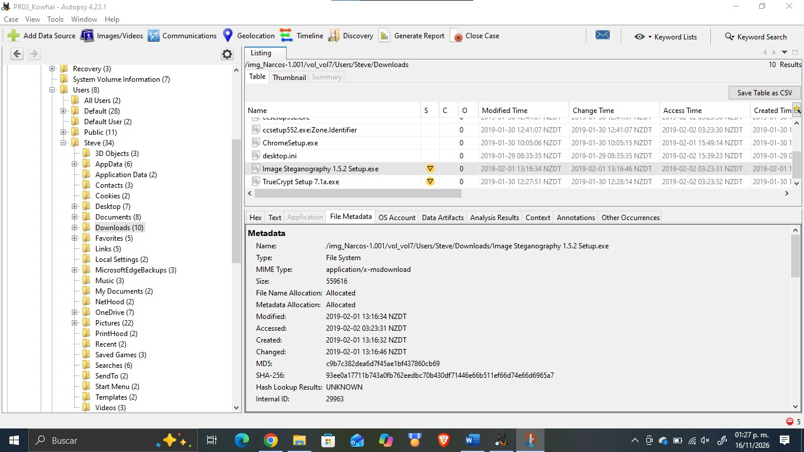
Resultado. El instalador se llama Image Steganography 1.5.2 Setup.exe y mide 559,616 bytes. Se creó el 01/02/2019 a las 13:16:32 NZDT, se modificó a las 13:16:34 y sus metadatos cambiaron a las 13:16:46 NZDT. Su MD5 es c9b7c382dea6d7f45ae1bf437860cb69. Autopsy lo marca con un indicador amarillo en la columna S.
Parte I. Instalador de cifrado
En la misma carpeta Downloads está el instalador de la herramienta de cifrado (figura 38).
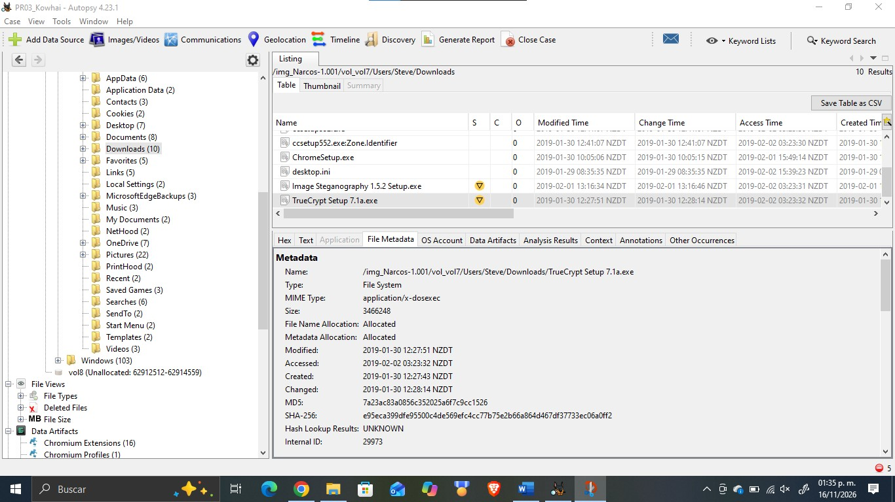
Resultado. El instalador se llama TrueCrypt Setup 7.1a.exe y mide 3,466,248 bytes. Se creó el 30/01/2019 a las 12:27:43 NZDT, se modificó a las 12:27:51 y sus metadatos cambiaron a las 12:28:14 NZDT. Su MD5 es 7a23ac83a0856c352025a6f7c9cc1526. TrueCrypt es un programa de cifrado de discos y volúmenes que se dejó de mantener en 2014. También está marcado en la columna S.
Parte I. Caché de Discord y ActivitiesCache.db
La caché de Discord está en la carpeta Roaming del perfil (figura 39). Windows Timeline guarda su base de datos de actividades en una carpeta de ConnectedDevicesPlatform (figura 40).
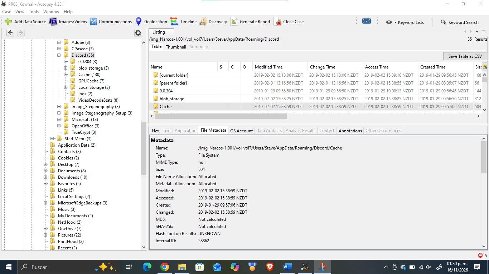
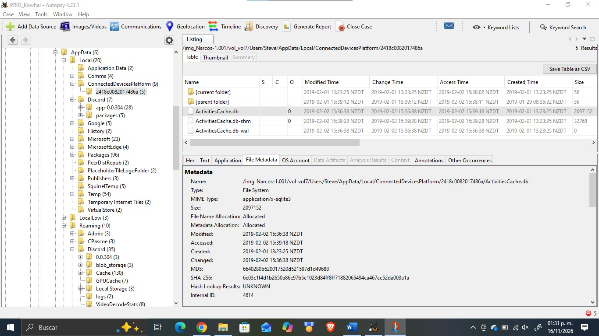
Resultado. La carpeta Discord de Roaming (creada el 29/01/2019 a las 09:56:45 NZDT) contiene 0.0.304, blob_storage, Cache, GPUCache, Local Storage, logs y VideoDecodeStats. Su subcarpeta Cache tiene 130 elementos, se creó el 29/01/2019 09:57:06 NZDT y se modificó por última vez el 02/02/2019 a las 15:38:59 NZDT. El árbol también muestra, en Roaming, las carpetas CPascoe, Image_Steganography, Image_Steganography_Setup y TrueCrypt. ActivitiesCache.db es una base SQLite de 2,097,152 bytes, creada el 01/02/2019 a las 13:23:25 NZDT y modificada el 02/02/2019 a las 15:36:38 NZDT, con MD5 6640280b620017520d521597d1d49688; junto a ella hay un archivo -shm modificado a las 15:39:28 NZDT y un -wal vacío.
Parte II. Vuelos, BNE.png y dropoff.jpg
Se examinaron juntos flightbookings.PNG, BNE.png y dropoff.jpg (figuras 31, 35 y 30). La tabla 3 resume lo observado y su coincidencia con el caso.
Archivo | Creación (NZDT) | Lo observado | Coincidencia con el caso |
|---|---|---|---|
| BNE.png | 01/02/2019 13:13:19 | Foto del Story Bridge de Brisbane, en Downloads\Misc, con zona de Internet | Brisbane, Australia, es el origen de los pasajeros; BNE es el código del aeropuerto |
| dropoff.jpg | 02/02/2019 14:06:05 | Captura de Google Maps con la ficha de Eastbourne Library | Eastbourne Library es uno de los dos lugares de entrega que dio la inteligencia |
| flightbookings.PNG | 02/02/2019 15:28:44 | Cotización de 2 adultos BNE-WLG el 16/02/2019 y regreso el 23/02/2019, AU$1,327.82 | Dos viajeros de Australia a Wellington, el aeropuerto donde se interceptó a los pasajeros |
Lo observado. Los tres archivos se crearon en tres días consecutivos y apuntan a los mismos lugares: Brisbane, Wellington y Eastbourne. Los archivos de la cotización y del mapa tienen Zone.Identifier o zona de Internet, por lo que vienen de fuera del equipo. El 02/02/2019 se registró un último acceso a las 15:31:06 NZDT en los tres (dropoff.jpg, flightbookings.PNG y BNE.png), tres minutos después de crearse la cotización.
Interpretación propuesta. El equipo guarda material que coincide con la logística del caso en lugares, personas y tiempos: un origen en Australia, un destino en Wellington, la ubicación de uno de los puntos de entrega con un nombre, «dropoff», que sugiere una entrega, y una cotización para dos adultos, como los dos pasajeros interceptados. La secuencia, una foto de Brisbane el 01/02, el mapa de la biblioteca el 02/02 a las 14:06 y la cotización 82 minutos después, es compatible con alguien que prepara un viaje y un punto de encuentro. Por la hora del último acceso común, también es compatible con que alguien abriera los tres archivos juntos, aunque el Explorador de Windows o un antivirus pueden actualizar ese dato sin que haya una persona.
Lo que no puede confirmarse. La imagen de vuelos muestra una cotización, con el mensaje «Nice Job! You picked one of our cheapest flights. Book now…», no una compra, y no muestra nombres de pasajeros, así que no permite afirmar que sean John Fredricksen y Jane Esteban. Tampoco prueba que la entrega en la biblioteca se haya hecho. BNE.png es una fotografía común; su relación con el viaje se apoya solo en el nombre, que coincide con el código del aeropuerto, y en la cercanía en el tiempo. Los hechos del caso no indican la fecha de la intercepción, de modo que no se puede comparar con el vuelo cotizado del 16/02/2019. Por último, el ámbito Eastbourne-Petone-aeropuerto debe leerse con cuidado: la actividad menciona a Petone como un inmueble, pero ninguno de estos archivos lo muestra como destino.
Parte II. Mapas y registro de actividad
Se contrastaron airport crystals.jpg y Method run.jpg (figuras 28 y 34) con los registros de actividad que Autopsy extrae del sistema: Prefetch, que guarda cuándo se ejecutó un programa y cuántas veces, y Background Activity Moderator (BAM), una clave del hive SYSTEM que conserva la última ejecución de cada programa (figuras 41 a 44 y 45 a 48).
Lo observado. Method run.jpg se creó el 31/01/2019 a las 10:21:24 NZDT y se modificó un minuto después; airport crystals.jpg se creó y se modificó a las 10:25:18 NZDT, casi cuatro minutos más tarde. Ambos tienen Zone.Identifier y el mismo último acceso, 16:04:13 NZDT. Ese mismo día, Prefetch registra ejecuciones de Discord y de CCleaner entre las 15:28:40 y las 15:29:25 NZDT. El equipo se estaba usando, pero los archivos se crearon unas cinco horas antes de esas ejecuciones y se accedieron unos 35 minutos después. De ActivitiesCache.db, que se creó el 01/02/2019, solo se vieron los metadatos, no su contenido.
Interpretación que puede sostenerse. Las dos imágenes son mapas de un servicio de navegación con rutas en auto, guardadas en Documents\Misc con cuatro minutos de diferencia en una mañana de enero. Las dos parten de Eastbourne: una llega hasta la zona del aeropuerto y la otra recorre Lower Hutt, Stokes Valley y Wainuiomata. Por sus nombres, «airport crystals» y «Method run», y por la anotación «Home», son compatibles con la planificación de recorridos y de un punto de partida. Que «crystals» se refiera a metanfetamina es una inferencia a partir del nombre y del contexto del caso; el contenido de las imágenes no lo dice. Además, que Method run.jpg se modificara un minuto después de crearse es compatible con que se editara después de guardarse, por ejemplo para agregar «Home», pero eso no está probado.
Lo que no puede confirmarse. No se puede saber quién dibujó la anotación, si alguien recorrió esas rutas ni quién envió o recibió los archivos. Las fechas de creación de Autopsy son las de las copias en este disco, no del momento en que se hizo el mapa. Como Discord y CCleaner se ejecutaron cinco horas después de que se crearan los archivos, el registro de actividad no vincula los mapas con Discord. Para saber de dónde vienen las imágenes harían falta el contenido de sus Zone.Identifier (el HostUrl y el ReferrerUrl), el historial de Chrome del 31/01/2019 entre las 10:20 y las 10:30 NZDT y la caché de Discord. Otra observación: la actividad ubica la computadora en Petone, pero la anotación «Home» está en Eastbourne, por lo que quien la escribió pudo no ser quien usaba este equipo.
Parte II. Discord y sus límites probatorios
Lo observado. En el perfil Steve hay datos de usuario y de instalación de Discord. En Local están Discord\app-0.0.304 (28 elementos) y packages, y en Roaming, Discord con la caché (130 elementos) y Local Storage (figuras 39 y 40); la carpeta de datos se creó el 29/01/2019 a las 09:56:45 NZDT. Prefetch contiene archivos DISCORD.EXE-*.pf con la ruta /USERS/STEVE/APPDATA/LOCAL/DISCORD/APP-0.0.304. Se capturaron cuatro: DISCORD.EXE-794770A9.pf (contador 20, última ejecución 31/01/2019 15:28:40 NZDT), DISCORD.EXE-794770AB.pf (17, 15:28:44), DISCORD.EXE-794770AA.pf (14, 15:28:53) y DISCORD.EXE-794770B1.pf (8, 15:29:25) (figuras 41 a 44).
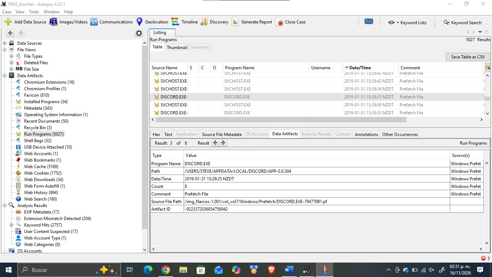
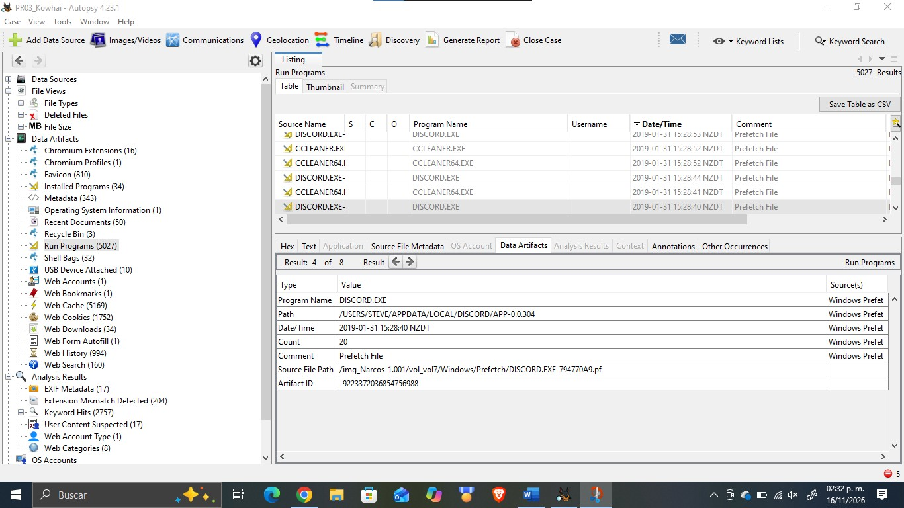
Interpretación propuesta. Discord estuvo instalado en el perfil Steve desde el 29/01/2019 y se ejecutó varias veces. Los cuatro archivos Prefetch tienen contadores distintos (8, 14, 17 y 20) porque cada uno corresponde a un proceso o combinación de argumentos diferente de Discord, que es una aplicación con varios procesos; por eso no se deben sumar. La caché se modificó hasta el 02/02/2019 a las 15:38:59 NZDT, casi al final de la actividad registrada del equipo (el hive SYSTEM se escribió a las 15:39:35). Eso sugiere que la aplicación se usó hasta esos últimos minutos, aunque los Prefetch capturados solo llegan hasta el 31/01/2019, y no se revisó si hay archivos más recientes.
Lo que no puede concluirse. La presencia de Discord y de su caché no dice qué mensajes se escribieron, con quién ni quién estaba frente al teclado. Una sesión de Windows corresponde a una cuenta, no a una persona. Tampoco se sabe si alguna de las imágenes del caso se envió o recibió por Discord, porque no se leyó el contenido de la caché ni de Local Storage. Para llegar a eso harían falta extraer y validar los mensajes y adjuntos de la caché (por ejemplo, archivos de cdn.discordapp.com), analizar el volcado de memoria y pedir los registros a la plataforma por la vía legal correspondiente.
Parte II. Esteganografía y cifrado por niveles
La actividad pide diferenciar cuatro niveles: descarga, instalación, ejecución y uso efectivo. La tabla 4 resume qué artefacto respalda cada uno. La ejecución se apoya en BAM (figuras 45 a 48), que en Autopsy aparece en Run Programs como «Recently Executed according to Background Activity Moderator».
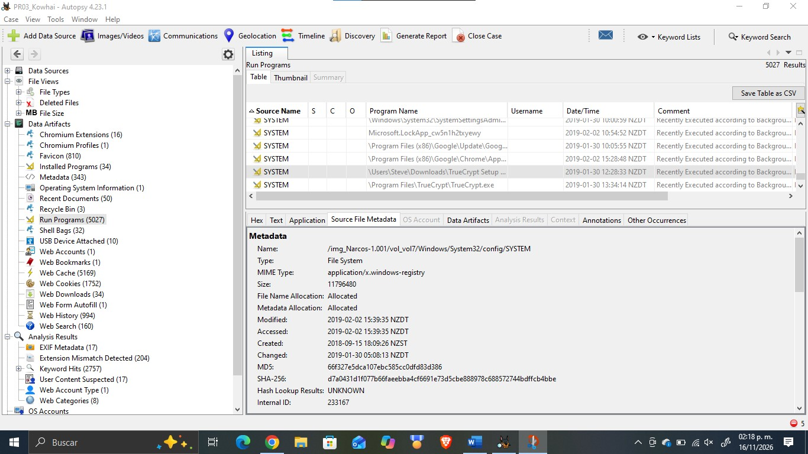
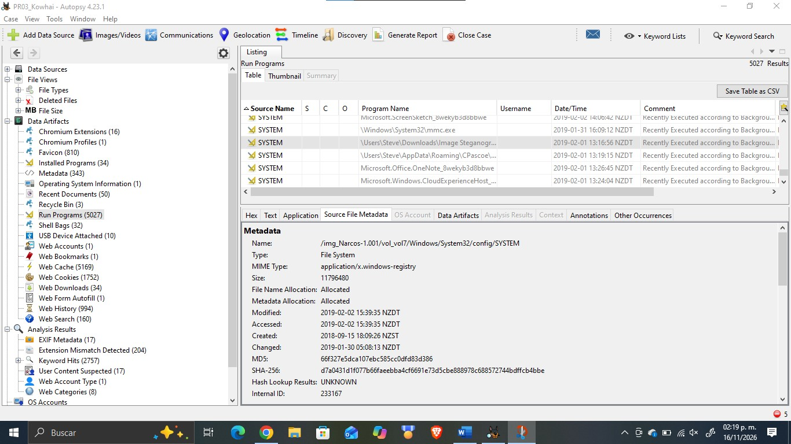
Nivel | TrueCrypt 7.1a | Image Steganography 1.5.2 |
|---|---|---|
| Descarga o presencia del instalador | TrueCrypt Setup 7.1a.exe en Downloads, creado el 30/01/2019 12:27:43 NZDT (figura 38) | Image Steganography 1.5.2 Setup.exe en Downloads, creado el 01/02/2019 13:16:32 NZDT (figura 37) |
| Instalación | Carpeta Roaming\TrueCrypt y ejecutable en \Program Files\TrueCrypt\TrueCrypt.exe (figuras 39 y 46) | Carpetas Roaming\Image_Steganography, Image_Steganography_Setup y CPascoe (figura 39) |
| Ejecución | BAM: instalador el 30/01/2019 12:28:33 y TrueCrypt.exe el 30/01/2019 13:34:14 NZDT (figuras 45 y 46) | BAM: instalador el 01/02/2019 13:16:56 y un ejecutable bajo Roaming\CPascoe el 01/02/2019 13:19:15 NZDT (figuras 47 y 48) |
| Uso efectivo | No demostrado: no se localizó un contenedor cifrado ni un volumen montado | No demostrado: no se identificó ninguna imagen con datos ocultos |
Lo observado. Los dos instaladores están en Downloads con sus fechas de creación, pero en las capturas no aparece un Zone.Identifier asociado a ellos, de modo que no se documenta de dónde vinieron; pudieron bajarse de Internet o copiarse desde otro medio (el equipo tiene 10 artefactos de dispositivos USB). Por eso en la tabla el primer nivel se llama «descarga o presencia del instalador». TrueCrypt tiene instalador, carpeta de configuración y un ejecutable en Program Files que BAM registra el 30/01/2019 a las 13:34:14 NZDT, una hora y seis minutos después de ejecutar el instalador. Image Steganography tiene instalador y carpetas en Roaming, y BAM registra la ejecución del instalador a las 13:16:56 y, a las 13:19:15, la de un ejecutable en AppData\Roaming\CPascoe (su nombre completo no se ve en la captura). CPascoe es el nombre de la carpeta que, por su ubicación, se infiere que es la del programa instalado, sin que la captura permita confirmarlo. También se vio el instalador de CCleaner (ccsetup552.exe, con su Zone.Identifier fechado el 30/01/2019 12:41:07 NZDT) y Prefetch de CCleaner el 31/01/2019 entre las 15:28:41 y las 15:28:52 NZDT (figuras 43 y 44).
Interpretación propuesta. Las dos herramientas no solo se obtuvieron: se instalaron y se ejecutaron. En el caso de Image Steganography hay una secuencia de tres minutos entre la descarga de BNE.png (13:13:19), la del instalador (13:16:32) y la ejecución del programa (13:19:15). Eso hace de BNE.png, una imagen PNG de 4.2 MB, un posible portador de datos ocultos, pero es solo una hipótesis. CCleaner es una herramienta de limpieza de rastros que se ejecutó el 31/01/2019 a las 15:28, lo que se debe tener presente al valorar que no se hayan encontrado más rastros. Las tres herramientas son legales y de uso común, y su presencia no implica un fin delictivo.
Lo que no puede confirmarse (uso efectivo). Ejecutar un programa no demuestra qué se hizo con él. BAM conserva solo la última ejecución de cada programa y no cuenta cuántas veces se usó, y su ausencia no prueba que no hubiera otras. No se localizó un contenedor cifrado de TrueCrypt ni un volumen montado, ni se identificó qué archivo, si alguno, se procesó con Image Steganography; tampoco se activó el módulo Encryption Detection de Autopsy. Para demostrar el uso efectivo harían falta el contenedor cifrado, los rastros de montaje en el Registro, la imagen resultante con datos ocultos o el volcado de memoria con las claves.
Parte II. Hipótesis, alternativa y hallazgos
Hipótesis principal. La computadora SK-DESKTOP, con el perfil Steve, se usó para planificar la logística de una operación de tráfico entre Australia y Nueva Zelanda: rutas desde Eastbourne al aeropuerto y hacia Lower Hutt, una captura de Eastbourne Library con el nombre «dropoff», una cotización de viaje de Brisbane a Wellington para dos adultos y herramientas de cifrado, esteganografía y limpieza (TrueCrypt, Image Steganography y CCleaner) junto con Discord, que permiten comunicarse y proteger la información. La hipótesis es coherente con el caso, pero los archivos muestran planeación e intención, no la comisión del delito, y nada del disco prueba el contenido de la maleta.
Explicación alternativa. El equipo pudo ser usado por otra persona, o por varias. Hay SID de usuario sin nombre además de «steve» y no se examinaron inicios de sesión ni evidencia de quién estaba frente al teclado. Los archivos de Documents\Misc tienen Zone.Identifier, es decir, llegaron de fuera, y la anotación «Home» está en Eastbourne y no en Petone, donde estaba la computadora; es posible que el titular recibiera pasivamente material de otro. También cabe una explicación sin delito: un viaje real a Wellington, una cita en una biblioteca y programas de privacidad de uso común. Los nombres «crystals» y «dropoff» son lo único que ata los archivos a las drogas, y por sí solos no bastan.
La tabla 5 resume los cuatro hallazgos que sustentan el análisis.
N.º | Hallazgo | Evidencia (figuras) | Qué demuestra y qué no |
|---|---|---|---|
| 1 | Rutas de planificación desde Eastbourne | airport crystals.jpg (10:25:18) y Method run.jpg (10:21:24) del 31/01/2019, con Zone.Identifier y la anotación «Home» (figuras 28 y 34) | Demuestra que el equipo guardó esos mapas; no demuestra que alguien recorriera las rutas ni quién los hizo |
| 2 | Viaje de Brisbane a Wellington para dos adultos | flightbookings.PNG (02/02/2019 15:28:44, AU$1,327.82) y BNE.png (01/02/2019 13:13:19) (figuras 31 y 36) | Demuestra una cotización; no una compra, ni los nombres de los pasajeros |
| 3 | Punto de entrega en Eastbourne Library | dropoff.jpg (02/02/2019 14:06:05) con la ficha de la biblioteca (figura 30) | Coincide con un lugar de entrega del caso; no prueba que la entrega ocurriera |
| 4 | Herramientas de cifrado, esteganografía y limpieza, y Discord | TrueCrypt (BAM 30/01/2019), Image Steganography (BAM 01/02/2019), CCleaner y Discord (Prefetch 31/01/2019) (figuras 45 a 44) | Demuestra instalación y ejecución; no el uso efectivo ni el contenido de las comunicaciones |
Dos evidencias adicionales necesarias. La primera es el análisis del volcado de memoria Narcos-Mem-1: permitiría buscar procesos activos, conexiones, claves de TrueCrypt, fragmentos de mensajes de Discord y si Image Steganography estaba abierta. La segunda son los registros externos y el contenido que aún no se recuperó: los registros de reservas de Virgin Australia y Qantas, los datos de la cuenta de Discord obtenidos por la vía legal, y, ya dentro de la imagen, el contenido de los Zone.Identifier, el historial y las descargas de Chrome y la caché de Discord, para saber de dónde vinieron las imágenes y quién las envió.
Resultados
Respuestas de la Parte I
Las tablas 6, 7 y 8 concentran los valores exactos de la Parte I. Las rutas son relativas a /img_Narcos-1.001/vol_vol7, la partición de Windows de la imagen (la unidad C:). Las fechas están en NZDT.
N.º | Pregunta | Respuesta (valor exacto) | Ruta en la imagen | Fig. |
|---|---|---|---|---|
| 1 | Edición y versión de Windows | Windows 10 Pro, versión 1809 (compilación 17763.107) | /Windows/System32/config/SOFTWARE | 17, 18, 19 |
| 2 | Perfil principal | Carpeta Steve; C:\Users\Steve; SID ...-1001 | /Users/Steve | 20, 21 |
| 3 | Clave UserAssist | Software\Microsoft\Windows\CurrentVersion\Explorer\UserAssist | /Users/Steve/NTUSER.DAT | 22, 23 |
| 4 | Navegadores y bases del historial | Chrome: History (SQLite); Edge/IE: WebCacheV01.dat (ESE) | /Users/Steve/AppData/Local/Google/Chrome/User Data/Default/History y /Users/Steve/AppData/Local/Microsoft/Windows/WebCache/WebCacheV01.dat | 24, 25 |
| 5 | MD5 de History de Chrome | f3f979c6dee9fbb7cbdf5818aaa4b723 | .../Chrome/User Data/Default/History | 26 |
N.º | Pregunta | Respuesta (valor exacto) | Ruta en la imagen | Fig. |
|---|---|---|---|---|
| 6 | Ruta de airport crystals.jpg | /Users/Steve/Documents/Misc/airport crystals.jpg | /Users/Steve/Documents/Misc | 27 |
| 7 | Creación de airport crystals.jpg | 31/01/2019 10:25:18 NZDT | /Users/Steve/Documents/Misc | 27 |
| 8 | MD5 de dropoff.jpg | 7feb763bebe42c3a3464c9ee3bb1d3e8 | /Users/Steve/Documents/Misc/dropoff.jpg | 29 |
| 9 | Última modificación de dropoff.jpg | 02/02/2019 14:06:06 NZDT | /Users/Steve/Documents/Misc/dropoff.jpg | 29 |
| 10 | Imagen de reservaciones de vuelo | flightbookings.PNG (MD5 d1b21a1cddcb3494d637f2424cc5f0f1) | /Users/Steve/Documents/Misc/flightbookings.PNG | 31, 32 |
| 11 | MD5 de Method run.jpg | 69b225bc0ef5a0c003f1e2a6646aaf92 | /Users/Steve/Documents/Misc/Method run.jpg | 33 |
N.º | Pregunta | Respuesta (valor exacto) | Ruta en la imagen | Fig. |
|---|---|---|---|---|
| 12 | MD5 de BNE.png | dffa98bdd7371d1806adb09db27ba283 | /Users/Steve/Downloads/Misc/BNE.png | 35 |
| 13 | Instalador de esteganografía | Image Steganography 1.5.2 Setup.exe; MD5 c9b7c382dea6d7f45ae1bf437860cb69 | /Users/Steve/Downloads/Image Steganography 1.5.2 Setup.exe | 37 |
| 14 | Instalador de cifrado | TrueCrypt Setup 7.1a.exe; MD5 7a23ac83a0856c352025a6f7c9cc1526 | /Users/Steve/Downloads/TrueCrypt Setup 7.1a.exe | 38 |
| 15 | Caché de Discord | Carpeta Cache (130 elementos) | /Users/Steve/AppData/Roaming/Discord/Cache | 39 |
| 16 | ActivitiesCache.db (Windows Timeline) | ActivitiesCache.db; MD5 6640280b620017520d521597d1d49688 | /Users/Steve/AppData/Local/ConnectedDevicesPlatform/2418c0082017486a/ActivitiesCache.db | 40 |
Línea de tiempo reconstruida
La tabla 9 ordena los eventos principales en NZDT. Las fechas de los archivos se leyeron de Autopsy (convertidas desde CST cuando fue necesario), las del Registro desde UTC, y las de la adquisición provienen del registro de FTK Imager, cuyas horas coinciden con NZDT.
Fecha y hora | Evento | Fuente | Fig. |
|---|---|---|---|
| 29/01/2019 08:15:39 | Instalación de Windows 10 Pro | InstallDate (SOFTWARE) | 19 |
| 29/01/2019 08:35:07 | Creación de la carpeta del perfil Steve | Metadatos de Users | 21 |
| 29/01/2019 09:56:45 | Creación de la carpeta de datos de Discord | Metadatos de Roaming\Discord | 39 |
| 30/01/2019 10:05:55 | Primer uso de Chrome (se crea History; Google Update en BAM) | History y BAM | 26, 45 |
| 30/01/2019 12:27:43 | Instalador de TrueCrypt en Downloads | Metadatos del archivo | 38 |
| 30/01/2019 12:28:33 | Ejecución del instalador de TrueCrypt | BAM | 45 |
| 30/01/2019 12:41:07 | Instalador de CCleaner (ccsetup552.exe) | Listado de Downloads | 37 |
| 30/01/2019 13:34:14 | Ejecución de TrueCrypt.exe | BAM | 46 |
| 31/01/2019 10:21:24 | Creación de Method run.jpg (modificado a las 10:22:24) | Metadatos del archivo | 33 |
| 31/01/2019 10:25:18 | Creación de airport crystals.jpg | Metadatos del archivo | 27 |
| 31/01/2019 15:28:40 a 15:29:25 | Ejecuciones de Discord y CCleaner | Prefetch | 41 a 44 |
| 31/01/2019 16:04:13 | Último acceso a ambos mapas | Metadatos del archivo | 27, 33 |
| 01/02/2019 13:13:19 | Creación de BNE.png | Metadatos del archivo | 35 |
| 01/02/2019 13:16:32 | Instalador de Image Steganography; ejecutado a las 13:16:56 | Metadatos y BAM | 37, 47 |
| 01/02/2019 13:19:15 | Ejecución de un programa en Roaming\CPascoe | BAM | 48 |
| 02/02/2019 14:06:05 | Creación de dropoff.jpg | Metadatos del archivo | 29 |
| 02/02/2019 15:28:44 | Creación de flightbookings.PNG; Chrome se ejecuta a las 15:28:48 | Metadatos, BAM y History | 32, 45 |
| 02/02/2019 15:31:06 | Último acceso a dropoff.jpg, flightbookings.PNG y BNE.png | Metadatos del archivo | 29, 32 |
| 02/02/2019 15:36:38 a 15:39:35 | ActivitiesCache.db, caché de Discord (15:38:59) y hive SYSTEM (15:39:35): última actividad | Metadatos del archivo | 40, 39 |
| 17/02/2019 17:34:16 a 17:50:02 | Adquisición y verificación de la imagen con FTK Imager | Registro de FTK Imager | 14, 15 |
Lectura. La secuencia sugiere una preparación escalonada: primero instalación y herramientas (29 al 31 de enero), después los mapas, luego, en febrero, la imagen de Brisbane, el instalador de esteganografía, el punto de entrega y la cotización. La última actividad es del 02/02/2019 a las 15:39 NZDT, unos 11 minutos después de crearse la cotización, y la adquisición ocurrió 15 días después. Un detalle de la línea de tiempo: la cotización era para el 16/02/2019, y la imagen del disco se adquirió el 17/02/2019, un día después de ese vuelo.
Límites del análisis
Autopsy y las fuentes usadas tienen límites que acotan lo que se afirma. Las fechas de creación, modificación y acceso son las de la copia en este disco y las puede cambiar el sistema, por lo que un último acceso no prueba que una persona abriera el archivo. BAM guarda solo la última ejecución de cada programa y Prefetch las últimas ocho por archivo, así que no reconstruyen el historial completo. Un usuario de Windows no es una persona, y no se examinaron los inicios de sesión. El volcado de memoria no se analizó, y el registro de la adquisición indica que el volcado se tomó unas horas después del disco, lo contrario del orden de volatilidad recomendado, que pide capturar primero la RAM.
Hay también partes de la evidencia que quedan por revisar: el contenido de los flujos Zone.Identifier, el historial y las descargas de Chrome de los días clave, la caché y el almacenamiento local de Discord, los archivos .lnk que aparecieron en las búsquedas con fechas en cero, y el registro de errores de la ingesta. Los módulos Encryption Detection y Email Parser no se activaron. Finalmente, la etiqueta Domain de Autopsy en las cuentas no implica que el equipo perteneciera a un dominio.
Conclusión
La imagen Narcos-1 se verificó contra el registro de FTK Imager y su MD5 y SHA1 coinciden, por lo que el análisis se hizo sobre una copia íntegra del disco. El equipo es una computadora SK-DESKTOP con Windows 10 Pro 1809, con un único perfil de usuario real, Steve. En ese perfil se identificaron los dos navegadores, los archivos pedidos con sus rutas, fechas y hashes, los instaladores de TrueCrypt e Image Steganography, la caché de Discord y la base de Windows Timeline.
Lo que el disco permite demostrar es que, entre el 29/01/2019 y el 02/02/2019, desde ese perfil se guardaron mapas con rutas desde Eastbourne, una captura de Eastbourne Library llamada «dropoff», una cotización de dos adultos de Brisbane a Wellington y una foto de Brisbane; que se instalaron y ejecutaron herramientas de cifrado, esteganografía y limpieza, y que Discord se usó en el equipo. Esto es coherente con la hipótesis de que el equipo se usó para planificar la logística de la operación. Lo que no permite demostrar es quién lo usó, si la cotización se convirtió en compra, si las rutas se recorrieron, qué se comunicó por Discord, ni si las herramientas se usaron para ocultar algo. Por eso la hipótesis se presenta como una línea de investigación y no como una conclusión, y se señalan dos evidencias que la reforzarían o descartarían: el volcado de memoria y los registros externos.
Como aprendizaje, el proyecto mostró la importancia de documentar cada valor con su ruta, su herramienta y su captura, de cuidar la zona horaria al reportar fechas y de separar lo observado de lo interpretado. También mostró que una cadena de artefactos, como descarga, instalación y ejecución, es más sólida que un archivo aislado, pero que ninguna de esas etapas equivale por sí sola al uso efectivo.
Referencias bibliográficas
- Carrier, B. (s. f.). Autopsy [Software de análisis forense digital]. Basis Technology. https://www.autopsy.com/
- Digital Corpora. (s. f.). 2019 Narcos [Conjunto de datos forense estandarizado: imagen de disco Narcos-1 y volcado de memoria]. Digital Corpora. https://digitalcorpora.org/corpora/scenarios/2019-narcos
- Garfinkel, S., Farrell, P., Roussev, V., & Dinolt, G. (2009). Bringing science to digital forensics with standardized forensic corpora. Digital Forensic Research Workshop (DFRWS), Montreal, Canadá. https://simson.net/clips/academic/2009.DFRWS.Corpora.pdf
- Brezinski, D., & Killalea, T. (2002). Guidelines for evidence collection and archiving (RFC 3227). Internet Engineering Task Force. https://www.rfc-editor.org/rfc/rfc3227
- Kent, K., Chevalier, S., Grance, T., & Dang, H. (2006). Guide to integrating forensic techniques into incident response (NIST Special Publication 800-86). National Institute of Standards and Technology. https://csrc.nist.gov/pubs/sp/800/86/final